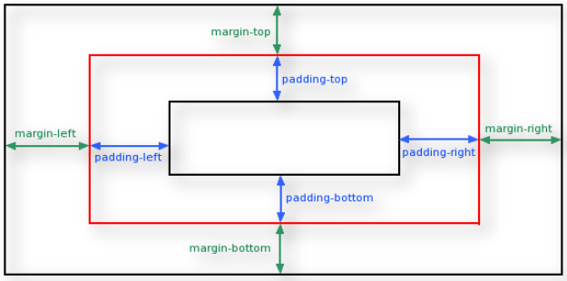

CSS - Cascading Style Sheets
Ma’nosi:Kaskadlangan stillar jadvali
Style(CSS) – Berishni uchta usuli bor
CSS
CSS
CSS
CSS –Box Model
CSS –Border
Border – bir so’z bilan aytganda chegara degani.
Xususiyatlari
Qiymati
border
border : 1px solid red;
border:
dashed red;
border: solid;
border-bottom, border-left, border- right, border-top
border-bottom:1px solid red; border-top:1px solid red;
border-style, border-top-style
Border-style:doted, solid, dashed, outset…..
border-color
border-color :red blue yellow; border-color : blue green ; border : red
border-width
border : 5px 10px 15px 20 px ;
border : 10px 20 px;
border : 15px
CSS –Border
Border-style:solid dotted; }
border-top: 4px outset #B81AE3;}
border-top: ridge #D919C5;
border-bottom: ridge #D919C5;}
border-right: 3px dashed #D919C5;}
border-left: outset #D919C5;}
border-left: dotted #D919C5;
border-bottom : dotted #850f79}
CSS – Margin
Margin
Xususiyatlari
Qiymati
margin
margin : 10px 4% 30px 6% ;
margin :
10px 50px;
margin : 50px ;
margin-bottom, margin-left, marginright, margin-top
margin-bottom:100px;
border-top:50px
margin : 0 auto;
Width : 300px ;
urtaga olib beradi
CSS – Margin

CSS – Padding
Padding
Xususiyatlari
Qiymati
Padding
padding : 10px 2% 30px 5% ;
padding : 10px 50px;
Padding : 50px ;
padding-bottom, padding-left,
padding-right, padding-top
padding-bottom:100px;
border-top:50px
CSS – Padding
< html>
< head >
< style >
div.ex1 {
width: 300px;
background-color: yellow;
}
div.ex2{
width: 300px;
padding: 25px;
background-color: lightblue;
}
< / style >
< / head >
< body >
< div class="ex1" > This div is 300px wide. < /div >
<br>
< div class="ex1" >
This Width of this div is 350px, even though.< /div >
< / body >
This div is 300px wide.
This Width of this div is 350px, even though.
Navbar or Menu
<body>
<section class ="guruh">
<div class="container">
<h3 class=="Logo"> Cuda < /h3>
<ul class="Navbar">
<li> < a href="#">Home< /a> </li>
<li> < a href="#">About< /a> </li>
<li> < a href="#">Work< /a> </li>
<li> < a href="#">Contact< /a> </li>
< /ul>
<div class="clear"> < /div>
< /div>
< /section>
< /body>
Element
Description
.guruh {background-color :yellow;}
Orqadagi fondi rangini o’zgartiradi.
.container {width:80%; margin: 0 auto; }
Uzunligini ekaranning 80%ni oladi va o’rtaga surib beradi.
.navbar li {display:inlineblock; list-style:none;}
Faqat uzini joyini olib beradi va tochkalarini yuq qilib beradi
.logo {{float:left;}
Chap tomonga o’tkazib beradi
.navbar {{float::right;}
Ung tomonga o’tkazib beradi
.navbar li a {text-decoration:none;}
< a> < /a> - tagni tagidagi chizig’ini yuq qilib beradi
Float ni ishlaganimizdan so’ng clear:both;
ishlatishimiz lozim.
.clear{clear:both;}
Tozalab beradi
CSS – Position
CSS pozitsiyasi elementi Websiteda qanday joylashishini
ko'rsatadi. Top , Right , Bottom, Left joylashtirilgan
elementlarning oxirgi manzilini belgilaydi.
Relative
Absolute
Fixed
Sticky
Float
Z-index
RELATIVE
one
two
three
four
▶ Relative
▶ .box2 {
▶ width : 300px;
▶ Height : 300px;
▶ Position : relative;
▶ Top : 100px;
▶ Left : 300px;
▶ }
▶ Boshqa elementlar
surilganini bilmaydi
Absolute

▶.parent{
▶ Position : relative;
▶ }
▶ .child {
▶ Position : absolute;
▶ Top : 50px;
▶ Left : 200px;
▶ }
▶ Boshqa elementlar
▶ surilganini biladi va joyiga
▶ surilib oladi.
▶ Agar parent class yuq bulsa
▶ < body>ni parent deb
▶ hisoblaydi
Fixed
Position fixed – browserga nisbatan suriladi. Pastga tushib ketsak
ham (yani scroll qilsak ham) u joyidan qimirlamaydi.

▶.box {
▶Position : fixed;
▶Top : 0;
▶Left : 0;
▶}
▶Boshqa elementlar
surilganini biladi va
joyiga surilib oladi.
Sticky

▶.box {
▶ Position : sticky;
▶ Top : 50px;
▶ }
▶ Uzidan bitta oldingi ona
elementiga qamalib qoladi
▶ Boshqa elementlar surilganini
bilmaydi
Float

▶.box {
▶Float : left;
▶Width : 40%;
▶}
▶.content {
▶Float : right;
▶Width : 40%;
▶}
▶.clear {Clear : both;}
▶Boshqa elementlar
surilganini biladi va joyiga
surilib oladi
CSS Fonts

▶ Fontni kodimizga
ulashning ikki xil
usuli bor:
1. html faylimizga
link orqali
(
< link rel="preconn
ect
" href="https://fo
nts.gstatic.com" cr
ossorigin />
);
2. css faylimizga
@import orqali
(
@import url('https://
fonts.googleapis.co
m/css2?family=Ope
n+Sans:wght@700&
display=swap');
).
▶
font
-family{..}
▶
font
-size{..}
CSS Psevdoclasslar nima va uning turlari
▶
CSS psevdoclasslar - bu uning
holatini belgilaydigan
selektorga qo'shilgan kalit
so'z. Masalan: biron bir
element ustida
harakatlanayotganda uning
rangini o'zgartirish uchun
ishlatilishi mumkin, yoki
biron bir element bosilganda
uning rangi o’zgarib qolishi.
псевдо
селекторы :link
:hover
:active
:visited
:focus
:first:child
:last:child
:nth-child
Psevdoclasslarning turlari va manosi
hover a:hover{….}
Sichqoncha kursori ustida turgan elementning stili o’zgaradi
active a:active {….}
Faol havola uchun stilni belgilaydi. Havola bosilganda faol bo'ladi.
focus a:focus {….}
Fokuslanadigan elementning stilini belgilaydi. Sichqonchamiz biron bir elementning ustiga borib bosilgandan keyingina rangiuzgaradi va sichqonchamizni boshqa joyga olib borib borib bosmagunimizgacha uni rangi uzgarmaydi. Masalan, bu kursor joylashtirilgan formadagi matn maydoni bo'lishi mumkin.
last-child ul:last-child {…}
Ona elementining oxirgi elementining stilini belgilaydi.
firs-child ul:first-child {..}
Ona elementining oxirgi elementining stilini belgilaydi.
nth-child ul:nth-child(3) {}
Ona elementining oxirgi elementining stilini belgilaydi.
visited a:visited{…}
tashrif buyurilgan foydalanuvchi allaqachon tashrif buyurgan va ularni stiling o’zagartiradi qo'llaniladi.
CSS Psevdoelementlar nima va uning turlari
▶
CSS Psevdoelementlar -bu
tanlangan elementning ma'lum bir
qismini stillash imkonini beruvchi
selektorga qo'shilgan kalit so'z.
▶
CSS3 -da Psevdoelementlar va
Psevdoclasslarni bir biridan
farqlash uchun ikkita ikki nuqta
bilan belgilanadi. CSS2 -da ular
bitta nuqta bilan belgilanadi.
Brauzerlar odatda ikkala
sintaksisini ham tushunadilar.